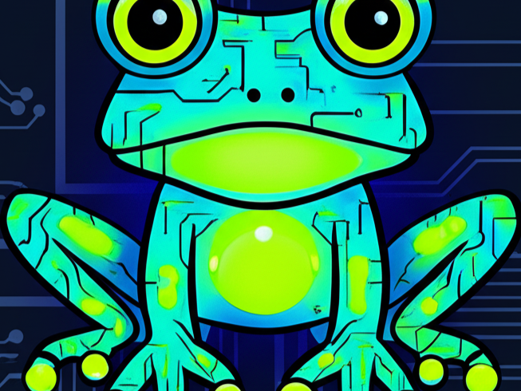

O que é Jovem Rã?
Bem-vindos ao site Jovem Rã, o lugar onde a música é nossa paixão! Aqui, mergulhamos em ritmos variados e exploramos os sons que fazem o nosso coração bater mais forte. De clássicos atemporais a descobertas fresquinhas, nosso objetivo é trazer o melhor da música para vocês. Prepare-se para uma viagem sonora incrível e não se esqueça de se inscrever para não perder nenhuma batida. Vamos juntos nessa jornada musical!
Mais do que um site, uma comunidade:
No Jovem Rã, acreditamos que a música transcende fronteiras e une pessoas. É por isso que criamos um espaço onde você pode compartilhar suas experiências musicais, descobrir novos artistas e conectar-se com outros amantes da bons conteúdos. Imagine um lugar onde você pode discutir suas séries, filmes e animes favoritos, descobrir novos talentos independentes, e participar de debates animados sobre os últimos lançamentos. Aqui, a diversidade de conteúdos é celebrada, e todos são bem-vindos, independentemente de seus gostos musicais.

Explorando um universo de Nerd-Geek:
Nossa curadoria musical é cuidadosamente selecionada para oferecer uma experiência única e diversificada. De indie rock a MPB, passando pelo eletrônico, hip hop, jazz, clássica e muito mais, nossa plataforma é um verdadeiro caldeirão de ritmos e estilos nos ritmos de suas séries, filmes e animes. Mergulhe em playlists temáticas, explore as últimas novidades do mundo da música e descubra artistas que irão te surpreender. Nossas playlists são criadas para todos os momentos, desde a energia vibrante de uma festa até a tranquilidade de um momento de relaxamento.
Recursos exclusivos para os amantes da música:
Além de uma vasta biblioteca musical, oferecemos recursos exclusivos para tornar sua experiência ainda mais completa. Imagine ter acesso a entrevistas exclusivas com seus artistas favoritos, poder participar de sorteios de ingressos para shows e festivais, e ainda contar com um fórum dedicado à discussão musical. No Jovem Rã, você não é apenas um ouvinte, você é parte de uma comunidade vibrante e engajada.
Junte-se à nossa comunidade Jovem Rã:
Não perca mais tempo! Inscreva-se agora mesmo no Jovem Rã e embarque nessa jornada Nerd-Geek conosco. Compartilhe suas músicas favoritas, conecte-se com outros amantes da música, descubra novos artistas e participe de uma comunidade vibrante e apaixonada. A música te espera! Explore nosso acervo musical, deixe seus comentários, participe das discussões e ajude a construir a comunidade musical mais animada da internet. Juntos, vamos celebrar a música em todas as suas formas e cores. A música conecta, a música emociona, a música une! Seja parte dessa experiência única e inesquecível. Jovem Rã: onde a música pulsa forte!
Alvarindo Pires
Alvarindo Pires é o idealizador e criador por trás do projeto Jovem Rã. Atualmente cursando Engenharia de Software, ele une seus conhecimentos técnicos com sua paixão pela música para criar uma plataforma inovadora de descoberta de artistas. O objetivo da Jovem Rã é oferecer um espaço dedicado à nova cena musical, utilizando a tecnologia para dar visibilidade a talentos independentes e conectar o público a sons autênticos e originais, como esses criados pelo 7 Minutoz.
O que esperar?
Prepare-se para uma imersão profunda no universo da cultura pop, onde a música encontra o geek em você. No Jovem Rã, a gente celebra as trilhas sonoras épicas, as séries viciantes, os filmes que marcaram época e os animes que conquistaram nossos corações. Explore análises de álbuns, reviews de filmes e séries, e descubra os segredos por trás das músicas que embalam suas histórias favoritas. Fique por dentro dos lançamentos, participe de debates acalorados e conecte-se com uma comunidade apaixonada. No Jovem Rã, você encontrará notícias, listas temáticas, artigos exclusivos e muito mais. Deixe-se levar pelas melodias que te emocionam, desvende os mistérios dos seus personagens preferidos e celebre a cultura nerd em todas as suas formas. Junte-se a nós nessa jornada! Inscreva-se na nossa newsletter, siga-nos nas redes sociais e prepare-se para uma experiência inesquecível. O Jovem Rã é o seu portal para o universo geek e musical, onde a diversão e a informação se encontram em perfeita harmonia.
Mascote
O mascote foi homenagem ao anime Naruto, do universo dos sapos e seu estilo traz um tema Nerd-Geek.
